単品・小ロット
1個からの加工に対応。量産ではなく、製缶品や機械部品など一品物・少量品を中心に取り組みます。
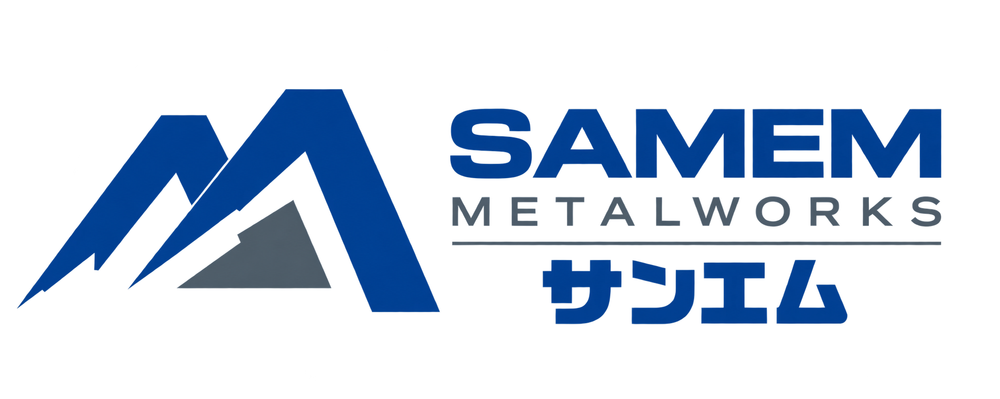
METAL MACHINING / ONOMICHI
横中ぐり盤・マシニングセンタによる、製缶品・機械部品の加工。
鉄・ステンレス・鋳物、1個からご相談ください。
 BTD-200QH / MUKAISHIMA FACTORY
BTD-200QH / MUKAISHIMA FACTORY
OUR STRENGTHS
1個からの加工に対応。量産ではなく、製缶品や機械部品など一品物・少量品を中心に取り組みます。
BTD200-QHを活用し、多面加工や穴加工、ボーリングなど大型・複雑形状の加工に対応します。
案件ごとの工程と設備状況を確認し、急ぎの加工についても可能な範囲で柔軟に対応します。
CAPABILITIES
製缶後の機械加工をはじめ、
穴加工・タップ加工・座ぐり・ボーリング・面削りなどをご相談いただけます。
図面を確認のうえ、
加工方法・納期をご回答します。
WORKS
製缶品、大径物、面加工、ボーリングなど、単品・小ロットを中心に対応しています。
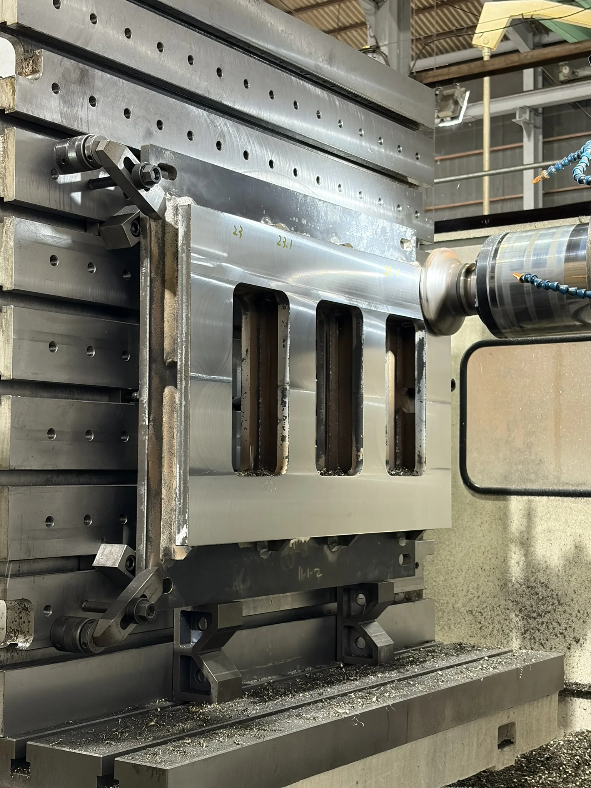
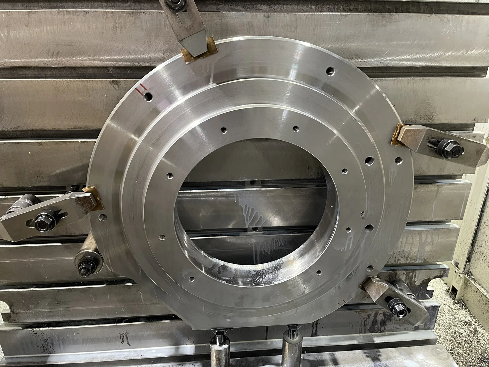
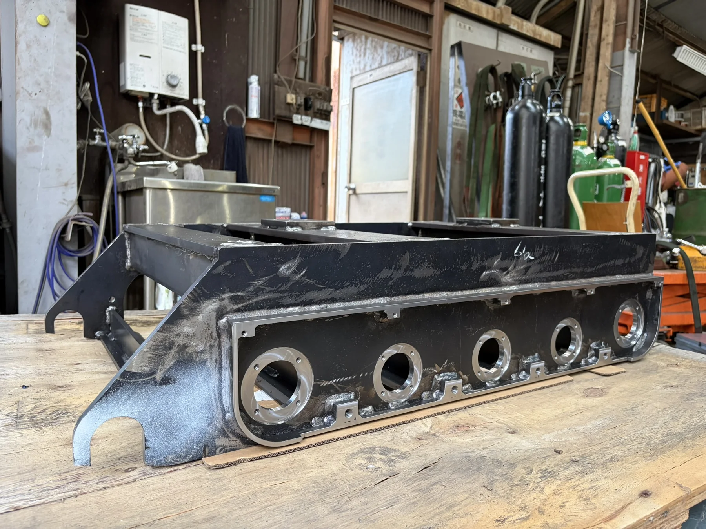
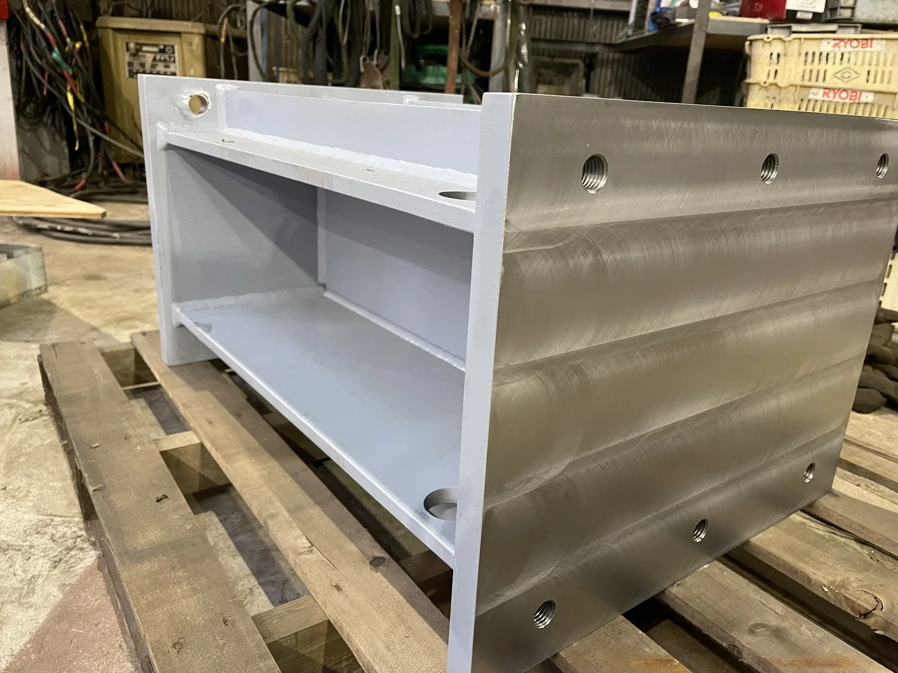
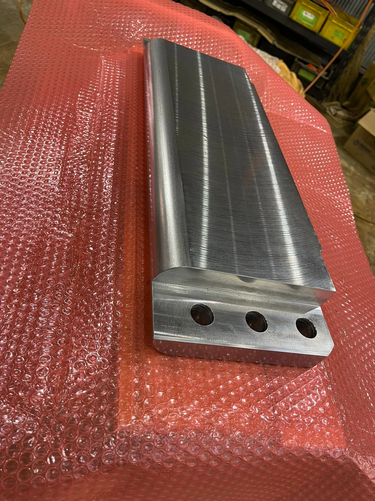
※掲載写真は加工例です。案件ごとに図面・材質・数量・納期を確認して対応可否をご回答します。
EQUIPMENT
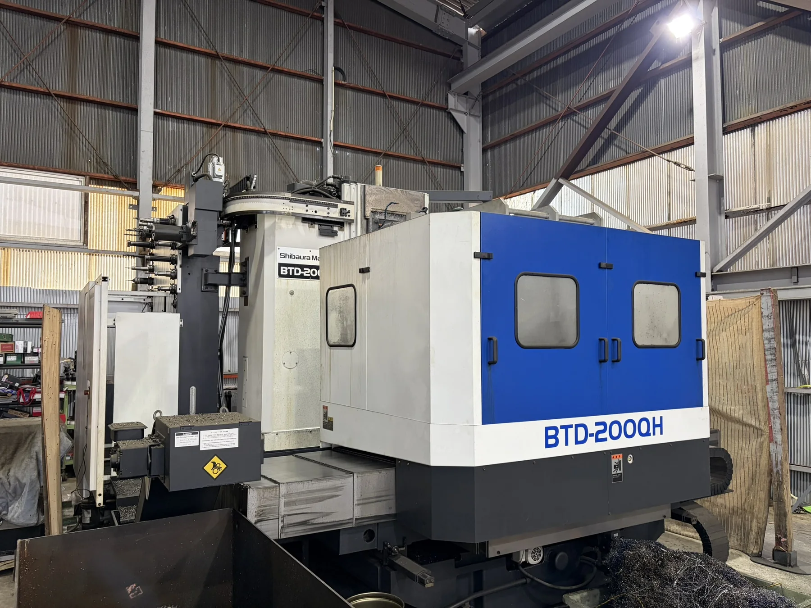
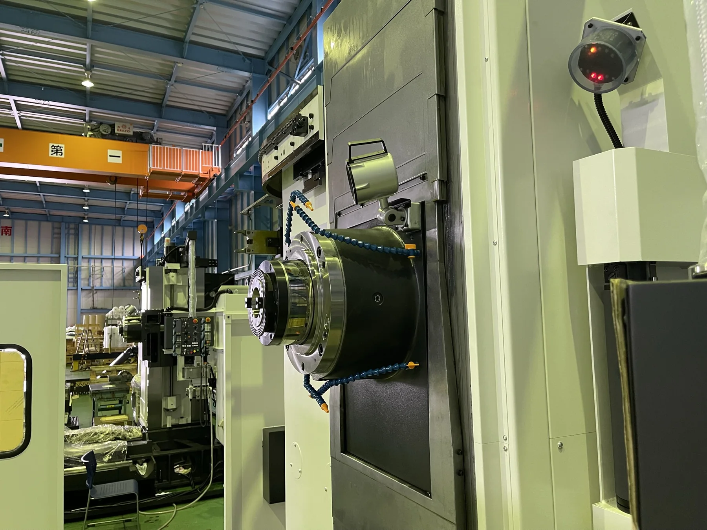
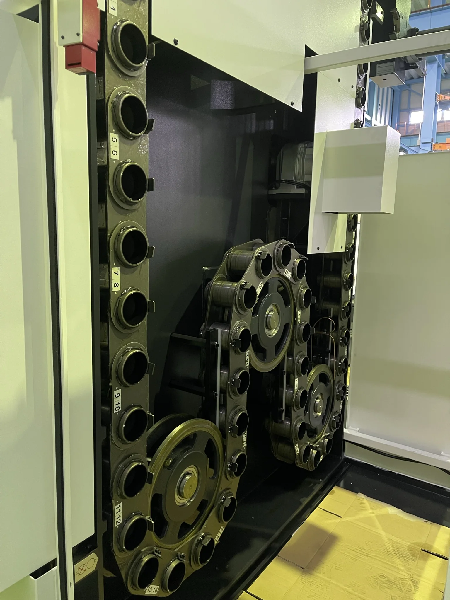
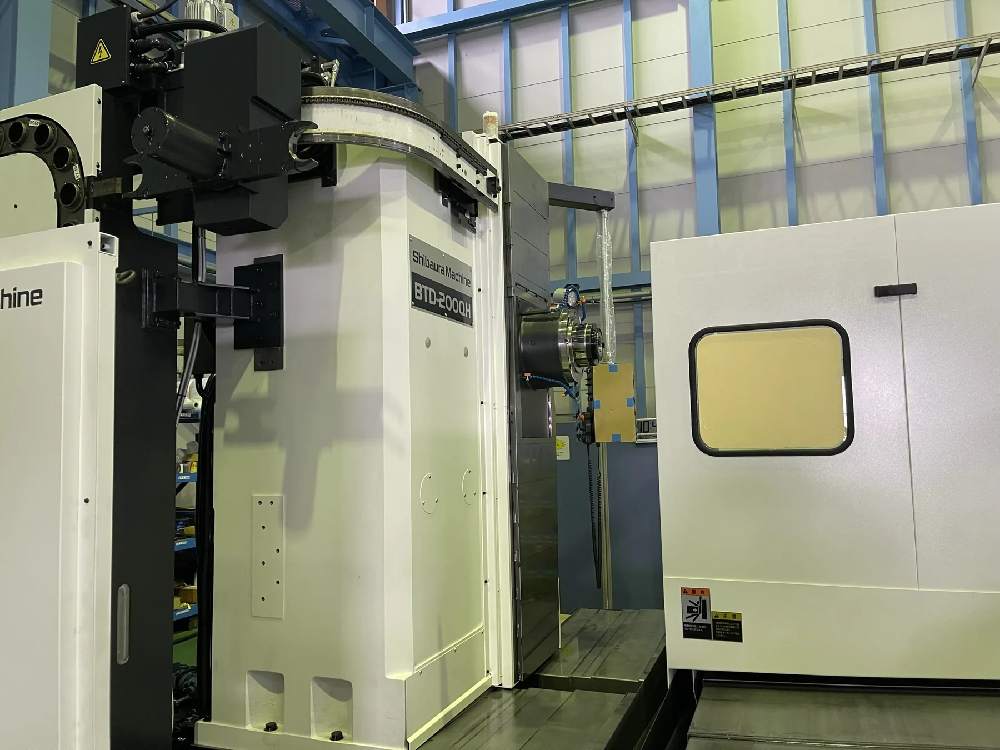
多面加工、穴加工、ボーリング、製缶品の機械加工などに使用しています。
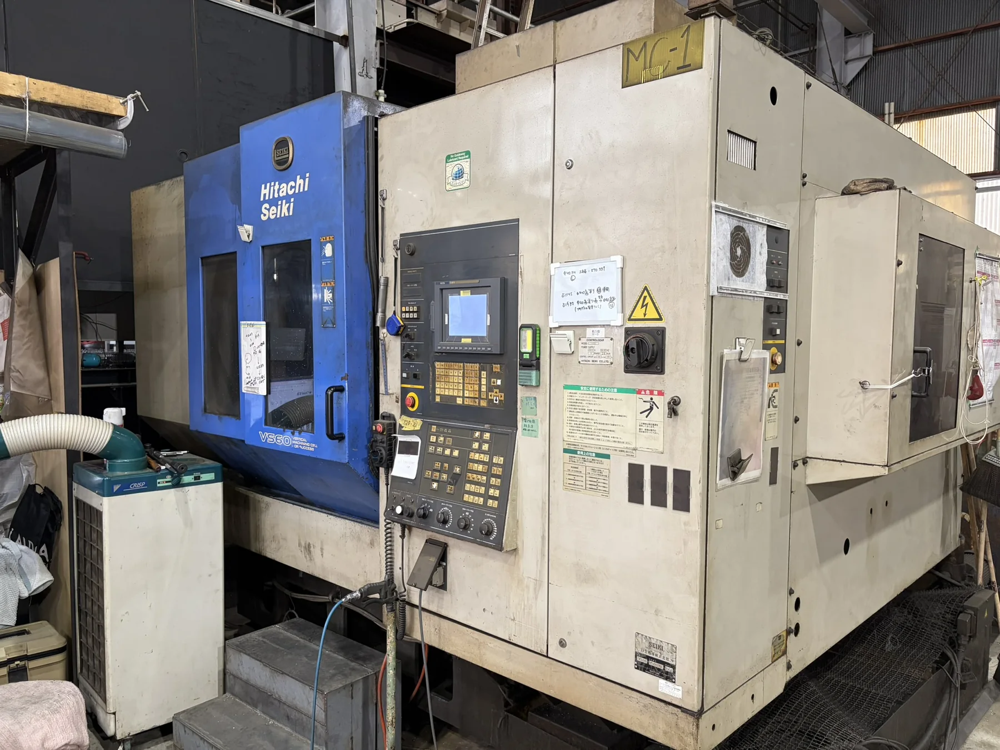
穴加工、タップ加工、面加工など、案件に応じてBTD200-QHと使い分けています。
図面があれば、まずはご相談ください。
COMPANY
| 屋号 | サンエム（SAMEM） |
|---|---|
| 代表 | 森 晴邦 |
| 創業 | 2024年5月 |
| 事業内容 | 精密工作機械による金属加工業 |
| 向島工場 | 〒722-0073 広島県尾道市向島町5577-1 |
| 対応エリア | 尾三地区（尾道・三原・福山）を中心に対応 |
| TEL | 090-1359-3879 |
| FAX | 0848-36-6593 |
CONTACT
図面、材質、数量、希望納期など分かる範囲でお知らせください。